模糊候选
Anchor / Spotify for Podcasters
anchor_spotify_for_podcasters
新闻 / 媒体 / 内容平台 / 播客 / 音频内容
文件较小且边缘密度偏低；大面积内容但细节分数偏低；局部锐度和边缘数量都偏低
score 3.22 | edge 0 | margins 86/86/85/84 | offset 1/1
anchor_spotify_for_podcasters
新闻 / 媒体 / 内容平台 / 播客 / 音频内容
文件较小且边缘密度偏低；大面积内容但细节分数偏低；局部锐度和边缘数量都偏低
score 3.22 | edge 0 | margins 86/86/85/84 | offset 1/1

36
新闻 / 媒体 / 内容平台 / 中国新闻 / 门户
文件较小且边缘密度偏低；局部锐度和边缘数量都偏低
score 4.16 | edge 0 | margins 85/97/84/96 | offset 1/1

adobe_stock
新闻 / 媒体 / 内容平台 / 图片 / 灵感平台
文件较小且边缘密度偏低；大面积内容但细节分数偏低；局部锐度和边缘数量都偏低
score 4.57 | edge 0.0001 | margins 79/79/79/81 | offset 0/-1

spotify_podcasts
新闻 / 媒体 / 内容平台 / 播客 / 音频内容
文件较小且边缘密度偏低；大面积内容但细节分数偏低；局部锐度和边缘数量都偏低
score 15.39 | edge 0.003 | margins 65/65/65/65 | offset 0/0

9
新闻 / 媒体 / 内容平台 / 图片 / 灵感平台
文件较小且边缘密度偏低；局部锐度和边缘数量都偏低
score 51.32 | edge 0.0038 | margins 104/65/126/64 | offset -11/1
national_geographic
新闻 / 媒体 / 内容平台 / 杂志 / 文化媒体
文件较小且边缘密度偏低
score 71.82 | edge 0.0206 | margins 121/65/120/65 | offset 1/0

huaban
新闻 / 媒体 / 内容平台 / 图片 / 灵感平台
文件较小且边缘密度偏低；大面积内容但细节分数偏低；局部锐度和边缘数量都偏低
score 84.48 | edge 0.0124 | margins 66/65/65/65 | offset 1/0
flipkart
电商 / 零售 / 商超 / 综合电商
大面积内容但细节分数偏低
score 92.39 | edge 0.0321 | margins 8/87/8/18 | offset 0/35
castbox
新闻 / 媒体 / 内容平台 / 播客 / 音频内容
大面积内容但细节分数偏低
score 103.82 | edge 0.0505 | margins 90/65/88/65 | offset 1/0
myfitnesspal
美妆 / 个护 / 健康消费 / 健康管理 / 健身消费
大面积内容但细节分数偏低
score 103.91 | edge 0.0304 | margins 0/0/0/0 | offset 0/0
macos
互联网 / 软件 / 数字服务 / 操作系统 / 系统软件
大面积内容但细节分数偏低
score 125.5 | edge 0.033 | margins 8/88/8/8 | offset 0/40
firefox
互联网 / 软件 / 数字服务 / 搜索 / 浏览器
大面积内容但细节分数偏低
score 125.82 | edge 0.0369 | margins 64/51/85/79 | offset -10/-14
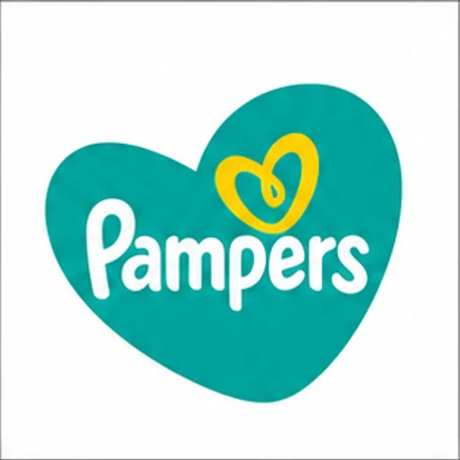
pampers
美妆 / 个护 / 健康消费 / 母婴 / 家庭健康消费
大面积内容但细节分数偏低
score 131.88 | edge 0.043 | margins 0/0/0/0 | offset 0/0
product_hunt
新闻 / 媒体 / 内容平台 / 内容社区 / 问答
大面积内容但细节分数偏低
score 135.94 | edge 0.0378 | margins 65/65/65/65 | offset 0/0
designboom
新闻 / 媒体 / 内容平台 / 杂志 / 文化媒体
大面积内容但细节分数偏低
score 141.38 | edge 0.0737 | margins 65/65/64/65 | offset 1/0
nikon
消费电子 / 科技硬件 / 相机 / 影像设备
大面积内容但细节分数偏低
score 152.93 | edge 0.0416 | margins 0/0/0/0 | offset 0/0
sleep_cycle
美妆 / 个护 / 健康消费 / 健康管理 / 健身消费
大面积内容但细节分数偏低
score 152.94 | edge 0.0539 | margins 0/82/88/0 | offset -44/41
cn_22b87143
新闻 / 媒体 / 内容平台 / 中国新闻 / 门户
文件较小且边缘密度偏低；大面积内容但细节分数偏低
score 156.93 | edge 0.0082 | margins 65/65/65/65 | offset 0/0
dribbble
新闻 / 媒体 / 内容平台 / 图片 / 灵感平台
大面积内容但细节分数偏低
score 157.97 | edge 0.0549 | margins 65/65/65/65 | offset 0/0
the_new_york_times
新闻 / 媒体 / 内容平台 / 国际新闻媒体
大面积内容但细节分数偏低
score 169.36 | edge 0.0566 | margins 66/66/66/66 | offset 0/0
hacker_news
新闻 / 媒体 / 内容平台 / 内容社区 / 问答
文件较小且边缘密度偏低
score 225.3 | edge 0.0204 | margins 65/65/65/65 | offset 0/0

kyoto_university
教育 / 知识 / 出版 / 大学 / 学术机构
内容贴边，可能裁切或有边框残留；上下边距明显失衡；视觉中心偏移较大
score 2747.18 | edge 0.4119 | margins 93/0/116/290 | offset -11/-145

daiichi_sankyo
医疗 / 医药 / 生物科技 / 制药企业
上下边距明显失衡；视觉中心偏移较大
score 565.48 | edge 0.1135 | margins 112/0/140/256 | offset -14/-128
zim
物流 / 外卖 / 本地生活 / 供应链 / 海运 / 仓储
上下边距明显失衡；视觉中心偏移较大
score 645.51 | edge 0.1331 | margins 129/0/119/241 | offset 5/-120

six_flags
游戏 / 娱乐 / 影视 / 音乐 / 主题乐园 / 娱乐场馆
内容贴边，可能裁切或有边框残留；上下边距明显失衡；视觉中心偏移较大
score 522.28 | edge 0.1233 | margins 20/0/57/239 | offset -18/-119

balenciaga
奢侈品 / 时尚 / 珠宝 / 奢侈时装
内容贴边，可能裁切或有边框残留；内容框几乎占满画布；上下边距明显失衡；视觉中心偏移较大
score 259.38 | edge 0.0559 | margins 0/0/0/236 | offset 0/-118

mitsubishi_estate
家居 / 房地产 / 建筑 / 房地产开发
内容贴边，可能裁切或有边框残留；上下边距明显失衡；视觉中心偏移较大
score 894.85 | edge 0.1814 | margins 56/0/142/236 | offset -43/-118

mitsui_fudosan
家居 / 房地产 / 建筑 / 房地产开发
内容贴边，可能裁切或有边框残留；上下边距明显失衡；视觉中心偏移较大
score 824.62 | edge 0.1753 | margins 56/0/119/236 | offset -31/-118
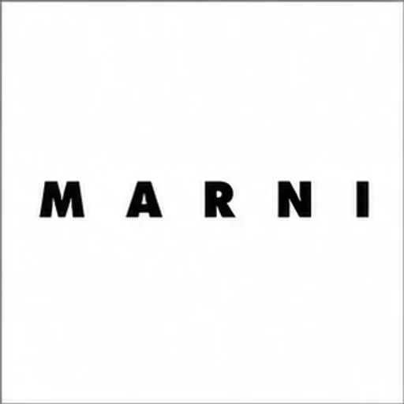
marni
奢侈品 / 时尚 / 珠宝 / 设计师品牌
内容贴边，可能裁切或有边框残留；上下边距明显失衡；视觉中心偏移较大
score 136.33 | edge 0.0302 | margins 0/0/39/232 | offset -19/-116
shimano
汽车 / 新能源 / 交通工具 / 自行车 / 骑行
内容贴边，可能裁切或有边框残留；上下边距明显失衡；视觉中心偏移较大
score 146.75 | edge 0.0509 | margins 24/0/0/224 | offset 12/-112
panasonic_lumix
消费电子 / 科技硬件 / 相机 / 影像设备
内容贴边，可能裁切或有边框残留；上下边距明显失衡；视觉中心偏移较大
score 226.56 | edge 0.0477 | margins 0/0/44/223 | offset -22/-111

cn_bac0ffa9
教育 / 知识 / 出版 / 语言学习
内容贴边，可能裁切或有边框残留；上下边距明显失衡；视觉中心偏移较大
score 300.93 | edge 0.1026 | margins 0/21/52/241 | offset -26/-110
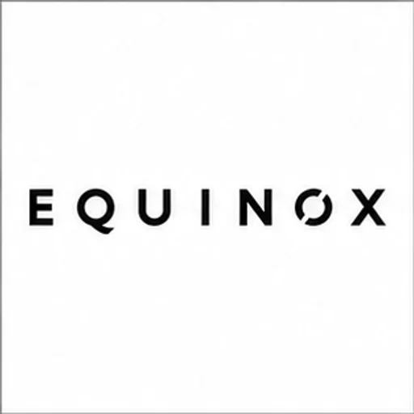
equinox
体育 / 赛事 / 俱乐部 / 体育用品零售 / 场馆
内容贴边，可能裁切或有边框残留；上下边距明显失衡；视觉中心偏移较大
score 192.81 | edge 0.0395 | margins 0/0/32/221 | offset -16/-110
tamron
消费电子 / 科技硬件 / 相机 / 影像设备
内容贴边，可能裁切或有边框残留；上下边距明显失衡；视觉中心偏移较大
score 197.56 | edge 0.0514 | margins 0/0/43/220 | offset -21/-110

cn_9ce02494
医疗 / 医药 / 生物科技 / 中医药 / 保健药品
上下边距明显失衡；视觉中心偏移较大
score 927.94 | edge 0.1821 | margins 87/0/132/218 | offset -22/-109

daikoku_drug
医疗 / 医药 / 生物科技 / 药房 / 连锁药店
上下边距明显失衡；视觉中心偏移较大
score 803.37 | edge 0.2378 | margins 97/0/151/219 | offset -27/-109
bulgari
奢侈品 / 时尚 / 珠宝 / 高级珠宝 / 腕表
内容贴边，可能裁切或有边框残留；上下边距明显失衡；视觉中心偏移较大
score 220.3 | edge 0.0427 | margins 41/216/0/0 | offset 21/108
fujifilm
消费电子 / 科技硬件 / 相机 / 影像设备
内容贴边，可能裁切或有边框残留；内容框几乎占满画布；上下边距明显失衡；视觉中心偏移较大
score 256.13 | edge 0.0591 | margins 0/0/0/216 | offset 0/-108
lufthansa
出行 / 旅游 / 酒店 / 航空 / 航空公司
内容贴边，可能裁切或有边框残留；上下边距明显失衡；视觉中心偏移较大
score 514.01 | edge 0.1056 | margins 40/12/0/228 | offset 20/-108

pull_and_bear
服饰 / 运动 / 户外 / 快时尚 / 基础服饰
内容贴边，可能裁切或有边框残留；内容框几乎占满画布；上下边距明显失衡；视觉中心偏移较大
score 312.57 | edge 0.0629 | margins 0/0/0/216 | offset 0/-108

disney_parks
游戏 / 娱乐 / 影视 / 音乐 / 主题乐园 / 娱乐场馆
内容贴边，可能裁切或有边框残留；上下边距明显失衡；视觉中心偏移较大
score 699.57 | edge 0.1519 | margins 59/0/96/215 | offset -18/-107
hyundai_ioniq
汽车 / 新能源 / 交通工具 / 新能源汽车
内容贴边，可能裁切或有边框残留；上下边距明显失衡；视觉中心偏移较大
score 117.12 | edge 0.0345 | margins 0/215/55/2 | offset -27/107
mango
服饰 / 运动 / 户外 / 快时尚 / 基础服饰
内容贴边，可能裁切或有边框残留；上下边距明显失衡；视觉中心偏移较大
score 246.28 | edge 0.0534 | margins 39/0/0/214 | offset 20/-107
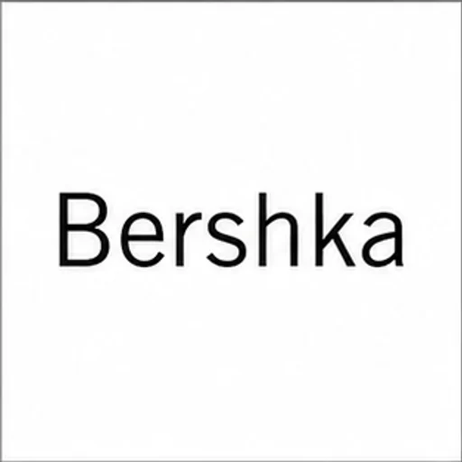
bershka
服饰 / 运动 / 户外 / 快时尚 / 基础服饰
内容贴边，可能裁切或有边框残留；内容框几乎占满画布；上下边距明显失衡；视觉中心偏移较大
score 310.61 | edge 0.0607 | margins 8/0/0/212 | offset 4/-106
freightliner
汽车 / 新能源 / 交通工具 / 商用车 / 工程车
内容贴边，可能裁切或有边框残留；内容框几乎占满画布；上下边距明显失衡；视觉中心偏移较大
score 431.71 | edge 0.1141 | margins 20/212/0/0 | offset 10/106
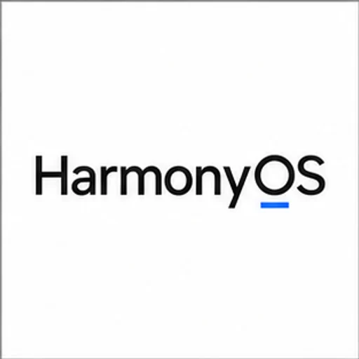
harmonyos
互联网 / 软件 / 数字服务 / 操作系统 / 系统软件
内容贴边，可能裁切或有边框残留；上下边距明显失衡；视觉中心偏移较大
score 292.87 | edge 0.0586 | margins 1/0/44/213 | offset -21/-106
innisfree
美妆 / 个护 / 健康消费 / 护肤品牌
内容贴边，可能裁切或有边框残留；上下边距明显失衡；视觉中心偏移较大
score 199.56 | edge 0.0497 | margins 43/1/0/214 | offset 22/-106
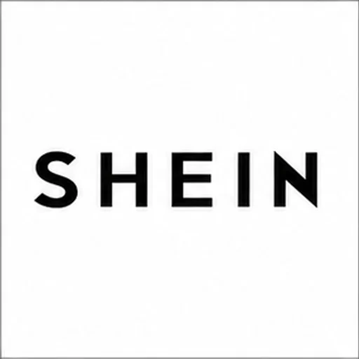
shein
服饰 / 运动 / 户外 / 快时尚 / 基础服饰
内容贴边，可能裁切或有边框残留；内容框几乎占满画布；上下边距明显失衡；视觉中心偏移较大
score 188.35 | edge 0.0449 | margins 0/0/0/210 | offset 0/-105
wumart
电商 / 零售 / 商超 / 商超 / 大卖场
内容贴边，可能裁切或有边框残留；上下边距明显失衡；视觉中心偏移较大
score 410.33 | edge 0.1053 | margins 32/0/0/211 | offset 16/-105
kia
汽车 / 新能源 / 交通工具 / 大众汽车品牌
内容贴边，可能裁切或有边框残留；上下边距明显失衡；视觉中心偏移较大
score 186.92 | edge 0.0388 | margins 0/0/28/208 | offset -14/-104
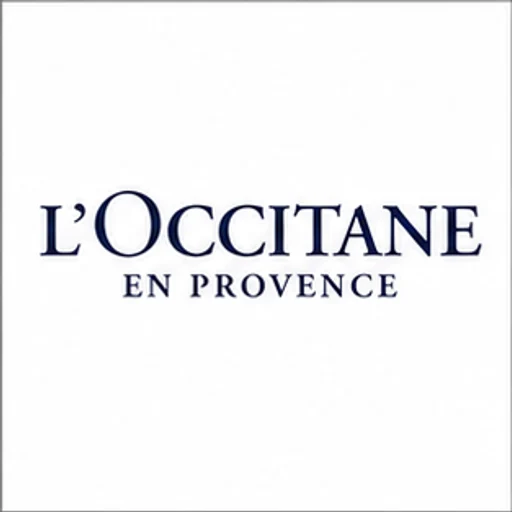
loccitane
美妆 / 个护 / 健康消费 / 洗护用品
内容贴边，可能裁切或有边框残留；上下边距明显失衡；视觉中心偏移较大
score 439.46 | edge 0.0832 | margins 0/0/29/208 | offset -14/-104
noom
美妆 / 个护 / 健康消费 / 健康管理 / 健身消费
内容贴边，可能裁切或有边框残留；上下边距明显失衡；视觉中心偏移较大
score 184.91 | edge 0.0468 | margins 0/0/52/208 | offset -26/-104
magna
汽车 / 新能源 / 交通工具 / 轮胎 / 汽车零部件
内容贴边，可能裁切或有边框残留；上下边距明显失衡；视觉中心偏移较大
score 247.65 | edge 0.0569 | margins 0/204/32/0 | offset -16/102
pandora
奢侈品 / 时尚 / 珠宝 / 高级珠宝 / 腕表
内容贴边，可能裁切或有边框残留；内容框几乎占满画布；上下边距明显失衡；视觉中心偏移较大
score 326.7 | edge 0.0593 | margins 0/0/0/204 | offset 0/-102

prince_hotels
出行 / 旅游 / 酒店 / 航空 / 酒店集团
内容贴边，可能裁切或有边框残留；上下边距明显失衡；视觉中心偏移较大
score 617.62 | edge 0.1321 | margins 0/19/72/224 | offset -36/-102
canon
消费电子 / 科技硬件 / 相机 / 影像设备
内容贴边，可能裁切或有边框残留；上下边距明显失衡；视觉中心偏移较大
score 187.46 | edge 0.0527 | margins 37/0/0/202 | offset 19/-101
crest
美妆 / 个护 / 健康消费 / 口腔护理
内容贴边，可能裁切或有边框残留；内容框几乎占满画布；上下边距明显失衡；视觉中心偏移较大
score 168.01 | edge 0.0421 | margins 18/0/0/200 | offset 9/-100
doutor
食品 / 饮料 / 餐饮 / 咖啡品牌
内容贴边，可能裁切或有边框残留；上下边距明显失衡；视觉中心偏移较大
score 286.26 | edge 0.0645 | margins 43/0/0/201 | offset 22/-100
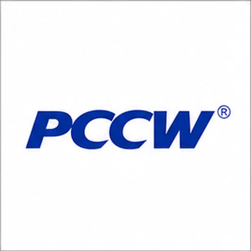
pccw
通信 / 运营商 / 网络基础设施 / 宽带 / 有线电视 / ISP
内容贴边，可能裁切或有边框残留；上下边距明显失衡；视觉中心偏移较大
score 220.55 | edge 0.0443 | margins 51/0/0/200 | offset 26/-100

arista
通信 / 运营商 / 网络基础设施 / 网络设备 / 通信设备
内容贴边，可能裁切或有边框残留；上下边距明显失衡；视觉中心偏移较大
score 268.09 | edge 0.0522 | margins 0/199/41/2 | offset -20/99
aveeno
美妆 / 个护 / 健康消费 / 洗护用品
内容贴边，可能裁切或有边框残留；内容框几乎占满画布；上下边距明显失衡；视觉中心偏移较大
score 230.84 | edge 0.049 | margins 0/0/0/199 | offset 0/-99
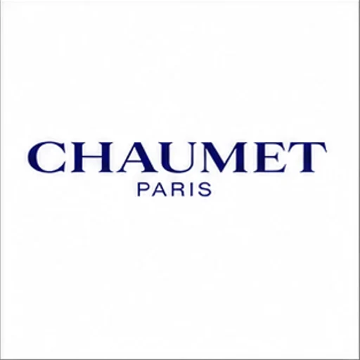
chaumet
奢侈品 / 时尚 / 珠宝 / 高级珠宝 / 腕表
内容贴边，可能裁切或有边框残留；上下边距明显失衡；视觉中心偏移较大
score 314.35 | edge 0.0543 | margins 35/198/0/0 | offset 18/99
nokia
消费电子 / 科技硬件 / 手机品牌
内容贴边，可能裁切或有边框残留；上下边距明显失衡；视觉中心偏移较大
score 225.66 | edge 0.0481 | margins 0/202/32/4 | offset -16/99
ntt_docomo
通信 / 运营商 / 网络基础设施 / 移动通信运营商
内容贴边，可能裁切或有边框残留；上下边距明显失衡；视觉中心偏移较大
score 189.35 | edge 0.0512 | margins 44/0/0/196 | offset 22/-98
stradivarius
服饰 / 运动 / 户外 / 快时尚 / 基础服饰
内容贴边，可能裁切或有边框残留；内容框几乎占满画布；上下边距明显失衡；视觉中心偏移较大
score 387.62 | edge 0.0716 | margins 1/0/0/197 | offset 1/-98
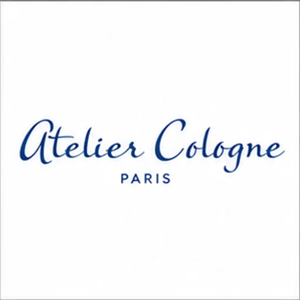
atelier_cologne
美妆 / 个护 / 健康消费 / 香水 / 香氛
内容贴边，可能裁切或有边框残留；上下边距明显失衡；视觉中心偏移较大
score 296.69 | edge 0.0595 | margins 32/0/0/192 | offset 16/-96
haribo
食品 / 饮料 / 餐饮 / 包装食品 / 零食
内容贴边，可能裁切或有边框残留；内容框几乎占满画布；上下边距明显失衡；视觉中心偏移较大
score 284.08 | edge 0.0863 | margins 0/0/0/192 | offset 0/-96
onlyfans
特殊行业 / 高风险行业 / 待筛选 / 成人内容 / 成人服务
内容贴边，可能裁切或有边框残留；上下边距明显失衡；视觉中心偏移较大
score 203.42 | edge 0.0536 | margins 0/0/32/192 | offset -16/-96
shiseido
美妆 / 个护 / 健康消费 / 护肤品牌
内容贴边，可能裁切或有边框残留；上下边距明显失衡；视觉中心偏移较大
score 263.5 | edge 0.0655 | margins 28/1/0/194 | offset 14/-96

z_kai
教育 / 知识 / 出版 / K12 / 教培
内容贴边，可能裁切或有边框残留；视觉中心偏移较大
score 497.7 | edge 0.1112 | margins 42/28/0/219 | offset 21/-95

apa_hotels
出行 / 旅游 / 酒店 / 航空 / 酒店集团
内容贴边，可能裁切或有边框残留；上下边距明显失衡；视觉中心偏移较大
score 869.48 | edge 0.2276 | margins 52/0/83/189 | offset -15/-94
ford_foundation
公共机构 / 城市品牌 / 非营利 / 公益 / 非营利组织
内容贴边，可能裁切或有边框残留；上下边距明显失衡；视觉中心偏移较大
score 364.75 | edge 0.0816 | margins 27/0/0/188 | offset 14/-94
alipay_foundation
公共机构 / 城市品牌 / 非营利 / 公益 / 非营利组织
内容贴边，可能裁切或有边框残留；上下边距明显失衡；视觉中心偏移较大
score 471.5 | edge 0.0984 | margins 0/0/40/184 | offset -20/-92
bananain
服饰 / 运动 / 户外 / 内衣 / 家居服
内容贴边，可能裁切或有边框残留；上下边距明显失衡；视觉中心偏移较大
score 367.9 | edge 0.0803 | margins 44/0/0/184 | offset 22/-92

british_airways
出行 / 旅游 / 酒店 / 航空 / 航空公司
内容贴边，可能裁切或有边框残留；内容框几乎占满画布；视觉中心偏移较大
score 642.68 | edge 0.1441 | margins 0/72/0/256 | offset 0/-92
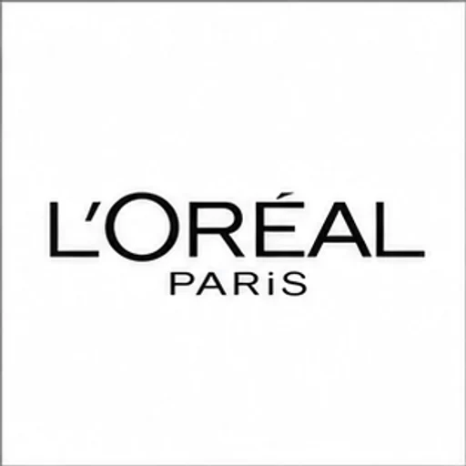
lor_al_paris
美妆 / 个护 / 健康消费 / 彩妆品牌
内容贴边，可能裁切或有边框残留；上下边距明显失衡；视觉中心偏移较大
score 311.16 | edge 0.0667 | margins 0/0/44/184 | offset -22/-92
rockefeller_foundation
公共机构 / 城市品牌 / 非营利 / 公益 / 非营利组织
内容贴边，可能裁切或有边框残留；上下边距明显失衡；视觉中心偏移较大
score 628.35 | edge 0.1175 | margins 2/0/34/185 | offset -16/-92
allegro
电商 / 零售 / 商超 / 综合电商
内容贴边，可能裁切或有边框残留；上下边距明显失衡；视觉中心偏移较大
score 132.9 | edge 0.0492 | margins 0/1/55/183 | offset -27/-91
pirelli
汽车 / 新能源 / 交通工具 / 轮胎 / 汽车零部件
内容贴边，可能裁切或有边框残留；内容框几乎占满画布；上下边距明显失衡；视觉中心偏移较大
score 225.65 | edge 0.0738 | margins 0/0/0/183 | offset 0/-91
reebok
服饰 / 运动 / 户外 / 综合运动品牌
内容贴边，可能裁切或有边框残留；内容框几乎占满画布；上下边距明显失衡；视觉中心偏移较大
score 200.43 | edge 0.0397 | margins 4/0/0/182 | offset 2/-91
chevrolet
汽车 / 新能源 / 交通工具 / 大众汽车品牌
内容贴边，可能裁切或有边框残留；上下边距明显失衡；视觉中心偏移较大
score 433.52 | edge 0.0984 | margins 0/0/24/181 | offset -12/-90
costco
电商 / 零售 / 商超 / 商超 / 大卖场
内容贴边，可能裁切或有边框残留；上下边距明显失衡
score 343.42 | edge 0.0913 | margins 47/0/0/179 | offset 24/-89
catl
汽车 / 新能源 / 交通工具 / 轮胎 / 汽车零部件
内容贴边，可能裁切或有边框残留；上下边距明显失衡
score 257.93 | edge 0.0586 | margins 0/0/27/176 | offset -13/-88
head_and_shoulders
美妆 / 个护 / 健康消费 / 洗护用品
内容贴边，可能裁切或有边框残留；上下边距明显失衡
score 525.39 | edge 0.1148 | margins 31/0/0/177 | offset 16/-88
nhs
公共机构 / 城市品牌 / 非营利 / 应急 / 安全 / 公共机构
内容贴边，可能裁切或有边框残留；上下边距明显失衡
score 280.67 | edge 0.0734 | margins 46/0/0/176 | offset 23/-88
ruijie_networks
通信 / 运营商 / 网络基础设施 / 网络设备 / 通信设备
内容贴边，可能裁切或有边框残留；上下边距明显失衡
score 257.57 | edge 0.0756 | margins 42/0/0/176 | offset 21/-88
hersheys
食品 / 饮料 / 餐饮 / 包装食品 / 零食
内容贴边，可能裁切或有边框残留；内容框几乎占满画布；上下边距明显失衡
score 435.53 | edge 0.0954 | margins 0/0/0/175 | offset 0/-87
juniper_networks
通信 / 运营商 / 网络基础设施 / 网络设备 / 通信设备
内容贴边，可能裁切或有边框残留；上下边距明显失衡
score 369.95 | edge 0.077 | margins 45/0/0/175 | offset 23/-87
waterpik
美妆 / 个护 / 健康消费 / 口腔护理
内容贴边，可能裁切或有边框残留；上下边距明显失衡
score 257.95 | edge 0.0549 | margins 31/0/0/175 | offset 16/-87
calvin_klein_underwear
服饰 / 运动 / 户外 / 内衣 / 家居服
内容贴边，可能裁切或有边框残留；内容框几乎占满画布；上下边距明显失衡
score 382.19 | edge 0.0677 | margins 0/0/0/173 | offset 0/-86

cn_ec8bfa3e
医疗 / 医药 / 生物科技 / 中医药 / 保健药品
内容贴边，可能裁切或有边框残留；上下边距明显失衡
score 859.29 | edge 0.2399 | margins 40/0/119/172 | offset -39/-86
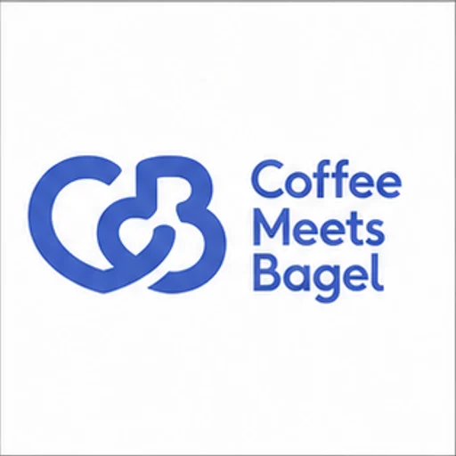
coffee_meets_bagel
特殊行业 / 高风险行业 / 待筛选 / 约会 / 社交匹配
内容贴边，可能裁切或有边框残留；上下边距明显失衡
score 300 | edge 0.0795 | margins 27/169/0/0 | offset 14/85

ireader
教育 / 知识 / 出版 / 电子书 / 有声书
内容贴边，可能裁切或有边框残留；上下边距明显失衡
score 624.94 | edge 0.1492 | margins 103/0/152/168 | offset -24/-84
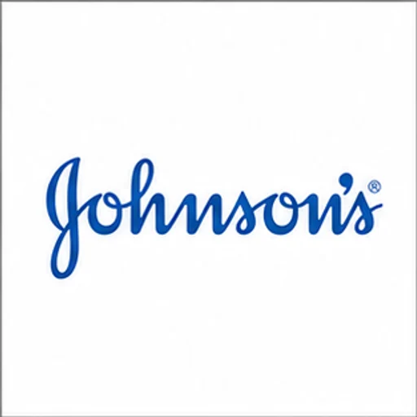
johnsons
美妆 / 个护 / 健康消费 / 洗护用品
内容贴边，可能裁切或有边框残留；上下边距明显失衡
score 252.58 | edge 0.0626 | margins 0/0/40/168 | offset -20/-84

airtasker
物流 / 外卖 / 本地生活 / 家政 / 维修 / 回收
内容贴边，可能裁切或有边框残留
score 826.77 | edge 0.1985 | margins 0/128/60/294 | offset -30/-83
dior_fragrance
美妆 / 个护 / 健康消费 / 香水 / 香氛
内容贴边，可能裁切或有边框残留；内容框几乎占满画布；上下边距明显失衡
score 377.08 | edge 0.068 | margins 0/0/0/167 | offset 0/-83
fudan_university
教育 / 知识 / 出版 / 大学 / 学术机构
内容贴边，可能裁切或有边框残留；上下边距明显失衡
score 1091.66 | edge 0.2321 | margins 42/0/104/164 | offset -31/-82

helpling
物流 / 外卖 / 本地生活 / 家政 / 维修 / 回收
内容贴边，可能裁切或有边框残留；上下边距明显失衡
score 369.2 | edge 0.1035 | margins 98/11/0/176 | offset 49/-82
neiwai
服饰 / 运动 / 户外 / 内衣 / 家居服
内容贴边，可能裁切或有边框残留；上下边距明显失衡
score 376.42 | edge 0.074 | margins 69/163/0/0 | offset 35/82
pigeon
美妆 / 个护 / 健康消费 / 母婴 / 家庭健康消费
内容贴边，可能裁切或有边框残留；上下边距明显失衡
score 187.92 | edge 0.0579 | margins 0/163/50/0 | offset -25/82
alpine
汽车 / 新能源 / 交通工具 / 超跑 / 高性能车
内容贴边，可能裁切或有边框残留；上下边距明显失衡
score 137.39 | edge 0.0308 | margins 0/0/79/162 | offset -39/-81
crest_08
美妆 / 个护 / 健康消费 / 口腔护理
内容贴边，可能裁切或有边框残留；内容框几乎占满画布；上下边距明显失衡
score 255.93 | edge 0.0681 | margins 20/1/0/163 | offset 10/-81
longines
奢侈品 / 时尚 / 珠宝 / 高级珠宝 / 腕表
内容贴边，可能裁切或有边框残留；内容框几乎占满画布；上下边距明显失衡
score 430.29 | edge 0.0797 | margins 0/0/0/162 | offset 0/-81
winona
美妆 / 个护 / 健康消费 / 护肤品牌
内容贴边，可能裁切或有边框残留；上下边距明显失衡
score 331.64 | edge 0.0957 | margins 40/162/0/0 | offset 20/81

air_france
出行 / 旅游 / 酒店 / 航空 / 航空公司
内容贴边，可能裁切或有边框残留
score 1152.79 | edge 0.2271 | margins 0/144/44/304 | offset -22/-80
infiniti
汽车 / 新能源 / 交通工具 / 豪华汽车
内容贴边，可能裁切或有边框残留；上下边距明显失衡
score 316.75 | edge 0.0755 | margins 49/160/0/0 | offset 25/80
systema
美妆 / 个护 / 健康消费 / 口腔护理
内容贴边，可能裁切或有边框残留；上下边距明显失衡
score 288.33 | edge 0.0716 | margins 27/0/0/160 | offset 14/-80

20th_century_studios
游戏 / 娱乐 / 影视 / 音乐 / 电影公司 / 影视制作
内容贴边，可能裁切或有边框残留；上下边距明显失衡
score 862.45 | edge 0.1971 | margins 57/0/83/158 | offset -13/-79

elsevier
教育 / 知识 / 出版 / 出版社 / 图书品牌
内容贴边，可能裁切或有边框残留；上下边距明显失衡
score 2878.81 | edge 0.4365 | margins 75/0/120/158 | offset -22/-79
samsung
消费电子 / 科技硬件 / 手机品牌
内容贴边，可能裁切或有边框残留；上下边距明显失衡
score 272.4 | edge 0.0567 | margins 31/0/0/158 | offset 16/-79
ucc_coffee
食品 / 饮料 / 餐饮 / 咖啡品牌
内容贴边，可能裁切或有边框残留；内容框几乎占满画布；上下边距明显失衡
score 258.72 | edge 0.0614 | margins 0/0/0/159 | offset 0/-79
zte_03
通信 / 运营商 / 网络基础设施 / 网络设备 / 通信设备
内容贴边，可能裁切或有边框残留；上下边距明显失衡
score 173.39 | edge 0.0441 | margins 64/0/0/159 | offset 32/-79
fema
公共机构 / 城市品牌 / 非营利 / 应急 / 安全 / 公共机构
内容贴边，可能裁切或有边框残留；上下边距明显失衡
score 518.62 | edge 0.1174 | margins 0/157/32/1 | offset -16/78
m_and_ms
食品 / 饮料 / 餐饮 / 包装食品 / 零食
内容贴边，可能裁切或有边框残留；内容框几乎占满画布；上下边距明显失衡
score 556.96 | edge 0.1118 | margins 0/0/0/156 | offset 0/-78
new_balance
服饰 / 运动 / 户外 / 综合运动品牌
内容贴边，可能裁切或有边框残留；上下边距明显失衡
score 209.59 | edge 0.0631 | margins 64/0/0/156 | offset 32/-78
ole
电商 / 零售 / 商超 / 商超 / 大卖场
内容贴边，可能裁切或有边框残留；上下边距明显失衡
score 345.52 | edge 0.0751 | margins 73/0/0/157 | offset 37/-78

qq_15
教育 / 知识 / 出版 / 电子书 / 有声书
内容贴边，可能裁切或有边框残留；上下边距明显失衡
score 784.72 | edge 0.1716 | margins 108/0/164/156 | offset -28/-78
sk_ii
美妆 / 个护 / 健康消费 / 护肤品牌
内容贴边，可能裁切或有边框残留；内容框几乎占满画布；上下边距明显失衡
score 221.4 | edge 0.0522 | margins 0/0/0/157 | offset 0/-78

cleveland_clinic
医疗 / 医药 / 生物科技 / 医疗服务 / 互联网医疗
内容贴边，可能裁切或有边框残留；上下边距明显失衡
score 354.83 | edge 0.082 | margins 15/154/47/0 | offset -16/77

cn_13b5f816
医疗 / 医药 / 生物科技 / 医疗服务 / 互联网医疗
内容贴边，可能裁切或有边框残留；左右边距明显失衡；上下边距明显失衡
score 695.8 | edge 0.1587 | margins 0/4/112/159 | offset -56/-77